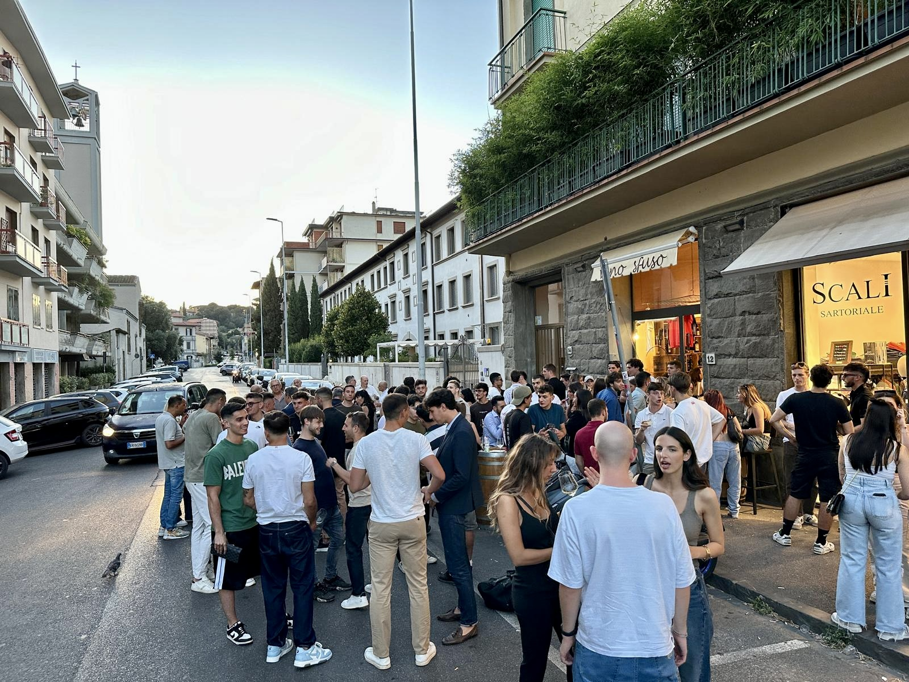
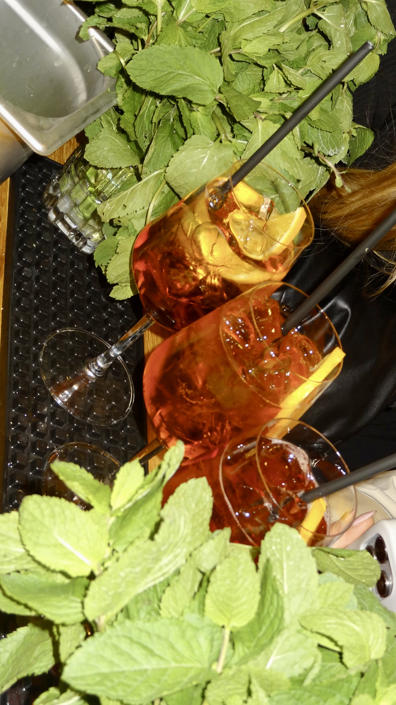

Enoteca · Firenze · Dal 2021
Scorri

Enoteca · Firenze · Dal 2021




Recensioni
“Un luogo incantevole dove gustare ottimi piatti e bevande toscane. Personale gentilissimo e accogliente.”
★★★★★“Bravi e servizio top, personale gentilissimo. Posto consigliato assolutamente. Prezzi competitivi.”
★★★★★“Trovato per caso, diventato il nuovo posticino di fiducia. Ottima qualità-prezzo e personale molto cordiale.”
★★★★★Dove siamo
Indirizzo
Via Elbano Gasperi 12
50131 Firenze (FI)
Orari
Lun 16:00–21:00
Mar–Mer 9:00–13:00 / 16:00–21:00
Gio 9:00–13:00 / 16:00–21:30
Ven–Sab 9:00–13:00 / 16:00–22:00
Dom chiusi*
Via Elbano Gasperi 12
50131 Firenze
Cliccando si carica Google Maps (cookie di terze parti)